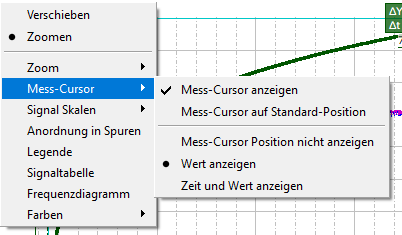

"Mess-Cursor anzeigen" ist ein Umschaltmenüpunkt. Er schaltet alle vorhandenen Cursor ein bzw. aus und hat den gleichen Effekt wie <STRG+LEER>. Der Menüeintrag wird "ausgewählt" angezeigt, wenn mindestens ein Cursor sichtbar ist.
"Mess-Cursor an Standardposition" ist ein Befehlsmenüpunkt. Dadurch werden die Cursor auf ihre Standardpositionen gesetzt (gleicher Effekt wie <STRG+UMSCHALT+LEER>). Die Standardpositionen der beiden ersten Messcursor befinden sich bei einem Drittel und zwei Dritteln des horizontal sichtbaren Bereichs. Wenn mehrere Cursor vorhanden sind, werden die anderen in gleichmäßigen Abständen nach dem zweiten Cursor angeordnet.
Wenn die beiden Cursor sichtbar sind, können die Cursorbezeichnungen auf das Format "Zeit und Wert" oder nur auf das Format "Wert" festgelegt werden. Alternativ lassen sie sich vollständig ausblenden. Die Optionen schließen sich gegenseitig aus. Sind die Cursor nicht sichtbar, sind diese drei Bezeichnungsformatoptionen ausgegraut.
